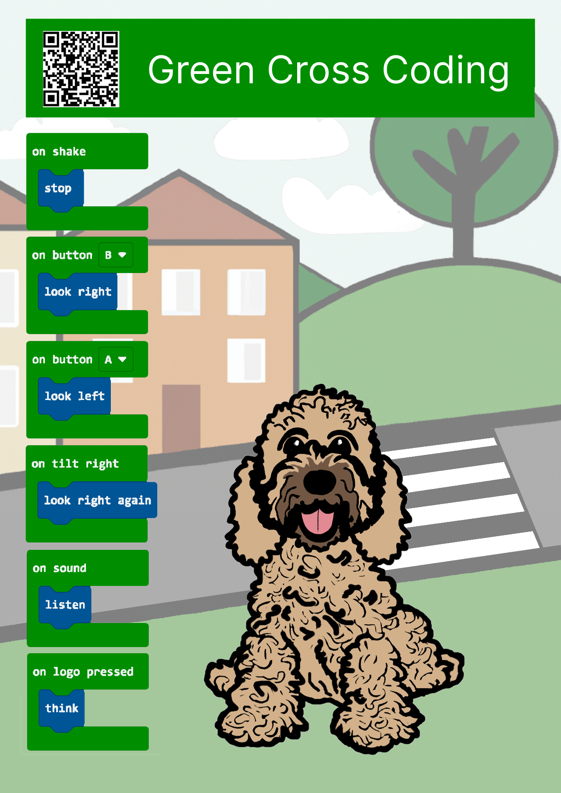
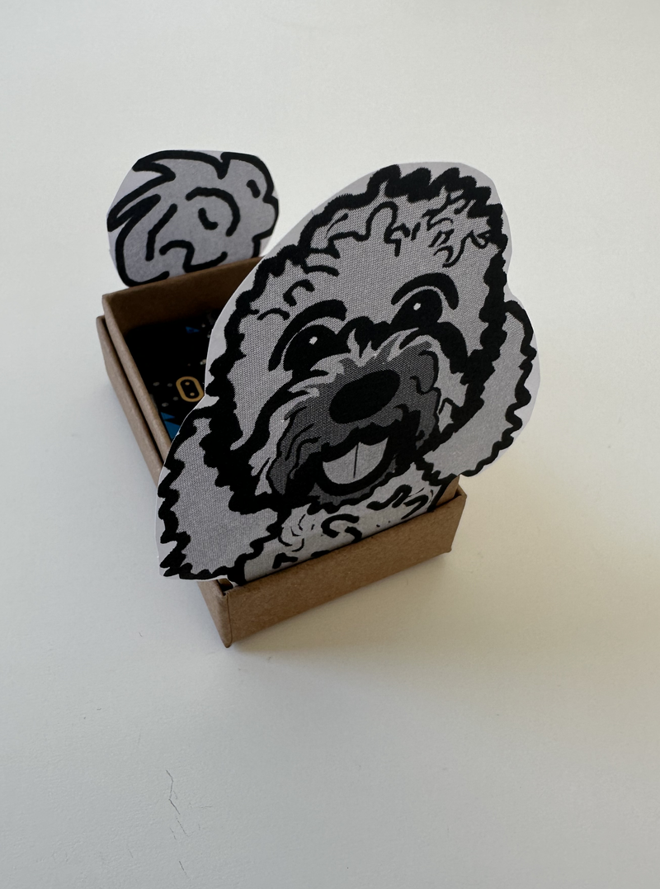

Road safety is incredibly important for children to understand and practice.
It is essential for children to be aware of the dangers that come with roads and traffic, and to learn how to stay safe.
This website contains a free guide and materials to help teach an important road safety lesson to children.
Using this resource, children can learn the right actions to cross a road safely through programming the actions in computer code.
This website is part of research which provides educational information on road safety for children. It is intended to complement normal road safety lessons, not replace them. Parents are encouraged to supervise their children while practicing road safety and to follow expert road safety advice from pactitioners and schools.
This website is designed to teach children the Green Cross Code sequence through programming the actions on a pocket computer.
The lesson should take about 90 minutes and can be altered according to the needs of your class. We recommend that children work in pairs to share a BBC micro:bit and resources.
Prior to the activity you can download the road safety resources:
presentation
,
worksheet
and
road safety progress form.
To measure road safety progress, use the progress sheet at start and the end of the task. Column 1 answers at the start, column 2 answers at the end
At the end of the activity, you can use this link to put a blank program on the BBC micro:bit
https://makecode.microbit.org/_E1UhdyVq6Due
1. Introduction to Road Safety
If measuring their road safety progress, ask the children to complete correct column in the progress form.
Using slides 3-12, talk to the children about the green cross code and road safety and why it is important. Each day in the UK, six children are killed or seriously injured due to road incidents, that is one class per week! source: https://www.brake.org.uk
2. Organisation
Pair pupils, open tablet or login to computer. Allocate BBC micro:bit, instructions and other resources. Remind them that the hardware technology is sensitive.
3. Instructions
Using slides 13-18, Introduce coding and BBC micro:bits. Explain that they will be making programming code to represent the sequence of crossing a road. Give them a demonstration of the complete program.
4. Supervise children programming the BBC micro:bit
Children should be reminded to use the Green Cross Code MakeCode blocks, slide 16, and not the default MakeCode blocks. They should be able to create the whole program with our blocks. Children to download code to Micro:bit, and test it. Check can they do the Green Cross Code in order.
Challenges – how would they change the code?
5. Show what we have learnt and discuss their learning
The children should have working micro:bit programs. If the children are going to be taken outside into a school yard, there is option to put the cut-outs and micro:bit into a craft box to ensure the computer board is kept safe. Children should be able to demonstrate their working program to the class. Please note: do not take the micro:bits out when crossing a road.
Discuss what have they learnt about the Green Cross Code and how they should use it? What have they learnt about coding?
6. Progress forms
Children fill in the progress form for the second time to show progress. Talk to children about road safety, asking questions.
Extension to the activity
You can supervise children in small groups as they cross a real road using the Green Cross Code. It is important they leave the computers in the classroom, to concentrate on the road and what they have learnt.
Lesson Pack
The pictured lesson pack can be download from this link pack080823 here.
The pack includes the programming card and optional cut-outs for the exercise.
1. Programmable microcomputer
The Green Cross Coding design has been created to work with the BBC micro:bit.
These pocket sized microcomputers allow children to program the Green Cross Code.
We bought the BBC micro:bit Go – Starter Kit which costs around £20.
2. MakeCode Programming Cards
The MakeCode programming card describes the computer code that the children will write in our lesson. The program puts "Stop, Look, Listen and Think!" actions inside events which we think will help them remember.

3. Lesson Plan
We are currently finalising the lesson plan, but the pack will contain A4 copies for teachers.
* Optional craft exercise with cutouts and box
We recommend that BBC micro:bit is placed in a craft box to protect its computer component.
Make sure your box fits the board before buying. Tip - some https://www.amazon.co.uk/ boxes come with useful foam pads inside which support the electronics.
To make this a little more fun we have created a set of cut-outs to place inside the craft box.
The card is contained in the downloadable zip file are supplied as both coloured-in or outlined.

Green Cross Coding is a research project by Carol Watson from Northumberland County Council and Northumbria University.
Please contact Carol Watson at carol.watson@northumberland.gov.uk or andrew.dow@northumbria.ac.uk to learn more about the project.
Website, pack and programming created by Carol Watson and Gavin Wood
The computer code shown on the programming card uses bespoke MakeCode blocks.
These blocks help ensure the computer code that children create makes sense for road safety, while using the familiar constructs that they have learnt in their school computer classes.
This following HTML link takes you to the MakeCode website and that special code:
https://makecode.microbit.org/_Hr9VyFVgtLm8